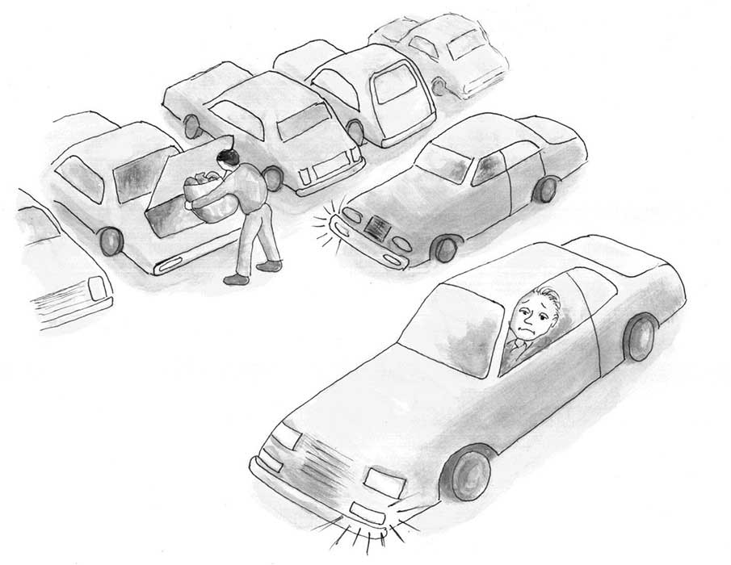

立法, 即以审慎刻意的方式制定法律，已被论者确当地描述为人类所有发明中充满了最严重后果的发明，其影响甚至比火的发现和火药的发明还要深远了。然立法不同于法律本身，法律从来不是像立法那样被“发明”出来，而立法的发明在人类历史上是较晚才出现的。立法这种发明赋予了人类以一种威力无比的工具——它是人类为了实现某种善所需要的工具，但是人类却还没有学会控制它，并确使它不产生大恶。（《法律、立法与自由》，第一卷第四章，哈耶克）
对我们理解社会推进最大的一次进步是由一批苏格兰哲学家于十八世纪做出的，其中最重要的是大卫·休谟和亚当·斯密。用当时另一个苏格兰哲学家亚当·福格森的话说，这些苏格兰人解释了“国家是如何跌跌撞撞地构建的，它固然是出于人们的行动，但并不是按照任何人的设计而完成的。”
一个很好的例子是语言。没人发明语言。没有任何人或理事会设计了语言。每种语言，它的词汇、语法、句法，都是在时间的长河中慢慢演化现在这副模样。拿英语里的“椅子”这个词为例，它并不是任何天才或者由最好最聪明的语言学家组成的委员会发明的。没有任何语言设计者颁布法令规定“merci”这个词得是现在说法语者所理解的意思。词义是在重复的使用和经历中随时间演化的。语法和句法的情况也类似。
毫无疑问语言是人类行为的产物，是我们和前人无数个体努力在特定场合向他人传递意思的产物。（例如“注意落石！”，“我爱你”，“把那把锤子拿给你爸”）但是历史上出现过的上千语言里没有一个是人类设计出来的。没有一种语言——英语不是，法语不是，乌尔都语不是，汉语不是，统统都不是发明出来的。尽管如此，每种语言依然是让人有效进行复杂交流的利器。
当然，当一种语言成形后，通常词典编纂者就会把它编成字典、同义词库和语法书。塞缪尔·约翰逊于18世纪为英语编纂的《约翰逊字典》是个著名的例子。但是此类编纂并不创造语言。塞缪尔·约翰逊并没有创造英语，他只是记录他所观察到的18世纪中期英语的演化状态。假如约翰逊博士在他的字典里把“椅子”解释为“冷血地杀害某人”，人们并不会突然就开始把“椅子”当做“谋杀”的同义词，他们只会觉得这部字典没什么价值。
语言的这套规则也适用于法律。大量约束人类互动行为的法律并不是由什么伟大的立法者发明设计的。它们是在没有中心设计者的情况下涌现出来的，法律是在演化的。
举例来说，惩治谋杀的法律并不是人类意图或设计的产物。从来没有过这样一个部落或社会，蓄意杀害和平的组织成员一开始被认为是可接受的，直到一些老者、睿智的领袖或者公众选出的一些人宣布谋杀为非法。这种谋杀，用盎格鲁撒克逊法的术语来说，本身就是错的（malum in se）。人们对谋杀并不容忍，他们还会采取各种步骤预防谋杀，并往往严厉地惩罚谋杀者。即使在没有正规政府领导的地方，我们也可以观察到这些步骤。同样的道理适用于盗窃、诈骗、纵火和其他许多暴力和侵犯性行为，至少当这类行为的对象是同一族群成员的人身和财产时定然如此。
这些法律的一部分可能根植于人类的基因。（例如家长自然地会做出大量努力来保护子女的生命和确保杀害他们子女的凶手得到恰当的惩罚。对其他家庭成员和朋友，人们也会自然地有这种情绪，虽然可能轻微一些。）其他法律可能更多基于社会和宗教传统，例如不像非洲部落社会的妇女，西方妇女不会在公众场合赤裸上身，或者有些社会的妇女在公众场合从来不许露出头发。
这里的要点在于我们每天都遵守着大量并非有意设计的规则。
考虑一下商场忙时的停车位是如何分配的。假设你和其他几个司机正在一个拥挤的停车场寻找车位，最终你找到了一辆正准备离开的车，一般来说，你会把车停在那车后面一些的地方并打开相应的转向灯。当其他也在找停车位的司机过来时看到你停在那并打着灯，他们立刻就明白你是在对这个即将空出来的停车位宣示使用权。其他司机虽然觉得失望，但只会超过你并继续寻找车位，而把这个车位留给你。
在这个每天都发生的例子中，你和其他司机都由法律约束着。第一个停在即将空出的车位后面并打灯的人被普遍认为临时享有这个车位的产权。这种权利一般来说受到其他司机的认可和尊重。
这条法律并未写在任何书中。它并不是由某位精通停车资源的天才委员会设计的。它是无人计划、在人们的互动中无意涌现出来的。它也被普遍认为是公平、和平地分配稀缺的停车资源的有效方法。
这个自发演化出来的分配停车资源的法律只是法律演化的一个例子。一个更重要的例子是商法。
一千年前，当贸易在地中海地区迅速繁荣时，商家间的纠纷自然也增多了。但是当时并没有一个统治着所有商人的主权国家。有些商人在热那亚，有些在威尼斯，有些在翁布里亚，还有些处于遍布地中海区域的几个相互独立的不同政治辖区。尽管如此，一个负责处理商业纠纷、高度复杂且统一的法律体系还是在这么大的范围内涌现了出来，这套法律今天在英语世界被称作商法。
商法有两个值得强调的特点。
首先商法是在商人的互动中涌现出来的。它并不是由某位国王、将军或者议会设计施行的。常规的商业做法渐渐为商人所熟悉，并让所有商人对他们和其他商人在不同情况下该如何行动形成了预期。当这些预期被有意或无意地违反，或者出现了新的非常规情况，冲突就发生了。商人自己组建了法庭来化解这些冲突。这些法庭通常青睐那些与既成预期最吻合的行为，反对那些被认为违背预期的做法。
词典编纂者通过观察被广泛接受的词意来撰写词条，非常类似地，商法法庭通过观察被广泛接受的商业行为来解决纠纷并在案件中宣示法律。这样法律就随着人们的行为和互动不断被创立和修改，并在法庭判决中被进一步提炼和公告。这里的重点在于没人设计了这些法律，它们是人类行为，而非设计，的结果。
商法的第二个特点是尽管没有政府来执行，它仍被广泛遵守。首先，一个典型的商人有着遵守商法的强烈动机，正如你有遵守停车位分配规则的动机。如果你违反了法律，你就得冒被他人报复的风险。其他司机会愤怒地向你鸣笛，甚至当面责骂你的冒失。（违反停车位分配规则一般只给他人带来些小麻烦，所以对违反者的惩罚一般也比较轻微，就是些臭脸、反复鸣笛、几句怒骂等等。）
对商人来说，违反商法可能会严重损害他的职业声誉。未能按时还债，或者拒收一批习俗认为应该接收的货物都会让一个商人失去未来与他人借贷和交易的机会。因为未来的这些机会很宝贵，商人就有强烈的私人动机去维护自己守法的名声，而维护名声的最好办法就是真的守法。
因此当看到历史记录显示商人在败诉时一般也会服从判决时，我们就不必惊讶了。商人选择服从并不是因为政府迫使他们这么做，再强调一遍，大多数情况政府都没有参与。商人服从判决是因为不服从会损害他们的声誉。
分配停车位的规则和古代商法只是两个法律是自发创建而不必写在成文法典里的例子。法律并不总是由政府立法，但它依然往往得到遵守。
而且重要的是，立法的通过并不必然保证它被有效执行。就像生活中真正在运行的法律规则不必由国家权威创立并写入成文法典，写入成文法典的立法也未必就能有约束力。
举个例子，根据马萨诸塞州的刑法典，两个未婚成人间自愿的性行为是犯罪。虽然这一禁止婚前和婚外性行为的法律被马萨诸塞州的立法机构通过了并且清楚的写入州法，但成人间的婚前/婚外性行为在该州实际上并不是非法的。该州没有警察会逮捕违反这条法律的人，没有法官或陪审团会判决承认该“犯罪”行为的人有罪。而且假如今天真的有那么跟不上时代的警察或法庭试着去惩罚此类“犯罪”，公众的愤怒就会让他们知难而退。事实上，在那样的情况下公众会认为是警察和法院，而不是那对成年人，违反了法律。
法律和立法的区别很重要，也远不止于语义上。它的重要性有两重。
首先，意识到这种区别让我们更好的明白有益社会的行为规范常常是自发涌现而非政府施加的。法律必须由权威有意设计只是个神话。
其次，不论政府对立法的扩张性使用是好是坏，我们对法律那种自然的尊重未必就该毫无疑问地扩展到立法上。一个腐败或昏庸的政府会制定许多摧毁社会的立法，我们不该把这些政府命令与法律混淆，也不该仅仅因为这些立法常常也被称作“法律”就尊重它们。